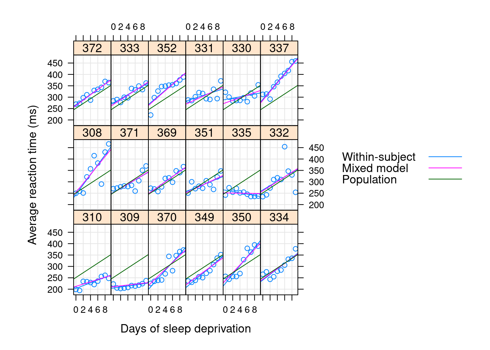
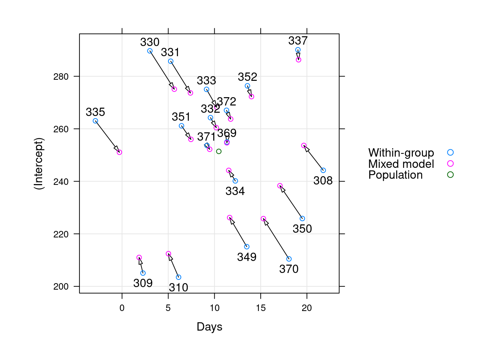

Introduction to Simulation
Review of Mixed Models and Introduction to Model Notation
Preliminaries
About Me
- 2020–now Beacon Biosignals
- 2017–2020 MPI for Psycholinguistics
- 2015–2017 University of South Australia
- 2015 Dr.Phil. Linguistik, Philipps-Universität Marburg
- 2010 MA Germanistische Linguistik, Philipps-Universität Marburg
- 2008 BA German Language and Literature, University of Notre Dame (USA)
- 2008 BS Mathematics, University of Notre Dame (USA)
also: minor contributor to lme4, occasionally prolific contributor to R-SIG-mixed-models, major contributor to MixedModels.jl
Plan I
This is waaaay more than we can do in a single day, but we’ll spend as much time as needed on the fundamentals and pick and choose the advanced topics based on that.
What is a mixed model and how can we use that to design a simulation?
- A fair amount of math, sorry-not-sorry
- Model notation and what that means
- where are the “random” bits?
- where are the assumptions?
- How mixed models differ from classical regression and what that means for things like degrees of freedom and hence p-values
- Reminder about contrast coding
Plan II
Parametric bootstrap and power analysis
- The parametric bootstrap is a simulation!
- Simulation-based power analysis can use the parametric bootstrap
- Julia is great …..
Imbalance, collinearity and rank deficiency in the fixed effects
- Creating “imperfect” simulated data to understand the impact of the real-world on your ideal mdoel
- Embracing uncertainty
Rank deficiency in the random effects and random effects selection
- What does it mean for the model to be rank deficient/singular/a boundary fit?
- Practical impacts of rank deficiency for various tests/convergence warnings
- Variance-bias tradeoff; over- vs. underfitting and what that means for your inference.
Extending this all to GLMM
- Lower power
- Link functions and a different observation-level random component
- Conditional vs. marginal effects
How do you write your model?
The general linear model
\[ y_i = \beta_{1}x_{i,1} + \beta_{0} + \varepsilon_i \]
- Independent variable(s) measured without error
- Dependent variable a linear function of independent variable plus some error / random variation
- Assumptions about the distribution of the error very important!
Some of the assumptions of linear regression
- independence of errors
- equal variance of errors (homoskedacity)
- normality of errors
And that’s roughly the order of importance!
Observation level
“Error terms” formulation
\[ y_i = \beta_{0} + \beta_{1}x_{i,1} + \ldots + \beta_{p}x_{i,p} + \varepsilon_i \] \[ \varepsilon_i \sim \mathcal{N}(0, \sigma^2) \]
for the \(i\)th observation (of \(n\) total) of \(p\) predictors
“Distribution” formulation
\[ y_i \sim \mathcal{N}(\mu_i, \sigma^2) \] \[ \mu_i = \beta_{0} + \beta_{1}x_{i,1} + \ldots + \beta_{p}x_{i,p} \]
This was inspired by a great blog post by Rasmus Bååth, which you really should read.
Long sums over lots of observations are annoying
- Writing \(\beta_{0} + \beta_{1}x_{i,1} + \ldots + \beta_{p}x_{i,p}\) gets old fast.
- so often use sigma notation: \[ \beta_0 + \sum_{j=1}^{p} \beta_{j}x_{i,j} = \beta_{0} + \beta_{1}x_{i,1} + \ldots + \beta_{p}x_{i,p}\]
- but even this is annoying
Matrices are convenient
way to express a system of equations resulting from \(n\) observations with \(p\) predictors/covariates:
\[\begin{equation*} %\underbrace{% \overbrace{% \begin{bmatrix} y_1 \\ y_2 \\ y_3 \\ \vdots \\ y_{n-1} \\ y_n \\ \end{bmatrix}}^{\textstyle n \times 1} = \overbrace{% \begin{bmatrix} 1 & x_{1,1} & \ldots & x_{1,p} \\ 1 & x_{2,1} & \ldots & x_{2,p} \\ 1 & x_{3,1} & \ldots & x_{3,p} \\ & & \vdots & \\ 1 & x_{n-1,1} & \ldots & x_{n-1,p} \\ 1 & x_{n,1} & \ldots & x_{n,p} \\ \end{bmatrix}}^{\textstyle n \times p} \overbrace{% \begin{bmatrix} \beta_0 \\ \beta_1 \\ \vdots \\ \beta_p \\ \end{bmatrix}}^{\textstyle p \times 1} + \overbrace{% \begin{bmatrix} \varepsilon_1 \\ \varepsilon_2 \\ \varepsilon_3 \\ \vdots \\ \varepsilon_{n-1} \\ \varepsilon_n \\ \end{bmatrix}}^{\textstyle n \times 1}% %}_{\textstyle\bf Y = X\beta + \varepsilon} \end{equation*}\]
becomes \(y = X\beta + \varepsilon\)
Matrix level
“Error terms” formulation
\[Y = X\beta + \varepsilon\] \[\varepsilon \sim \mathcal{N}(0,\sigma^2)\]
“Distribution” formulation
\[Y \sim \mathcal{N}(\mu,\sigma^2)\] \[\mu = X\beta \]
We usually learn and conceive of the linear model in terms of “line of best fit” plus some “error” so the distribution formulation seems a bit weird at first.
It is much more convenient when we start looking at extensions of linear regression, such as the linear mixed-effects model:
\[\begin{align*} (Y | B = b ) &\sim \mathcal{N}( X\beta + Zb, \sigma^2 I ) \\ B &\sim \mathcal{N}(0, \Sigma _\theta) \end{align*}\]
Digression: Maximum Likelihood Estimation
What does it mean to fit a (classical linear) model?
\[Y \sim \mathcal{N}(\mu,\sigma^2)\] \[\mu = X\beta \]
- Minimize sum of squares? (and what sum of squares are we talking about?)
- Maximize likelihood?
- Minimize deviance?
- All equivalent for classical linear models
- Also equivalent to finding \(\beta\) that leads to the smallest \(\sigma^2\)
- Ordinary least squares is the maximum likelihood estimator and BLUE (best, linear unbiased estimator )
What is likelihood? I
One of the hardest parts about statistics (and math in general) is that everyday words are given precise technical meanings.
- \(P(H|D)\): posterior probability
- \(P(D|H)\): likelihood
Related via Bayes’ Theorem: \[ P(H|D) = \frac{P(D|H)P(H)}{P(D)}\]
What is likelihood? II
… remember that “likelihood” is a technical term. The likelihood of \(H\), \(Pr(O\|H)\), and the posterior probability of \(H\), \(Pr(H\|O)\), are different quantities and they can have different values. The likelihood of \(H\) is the probability that \(H\) confers on \(O\), not the probability that \(O\) confers on \(H\). Suppose you hear a noise coming from the attic of your house. You consider the hypothesis that there are gremlins up there bowling. The likelihood of this hypothesis is very high, since if there are gremlins bowling in the attic, there probably will be noise. But surely you don’t think that the noise makes it very probable that there are gremlins up there bowling. … The gremlin hypothesis has a high likelihood (in the technical sense) but a low probability.
Sober, E. (2008). Evidence and Evolution: the Logic Behind the Science. Cambridge University Press.
Maximum likelihood estimation (MLE)
- find the coefficients / predictor that maximizes the likelihood
- i.e. find the quantitative hypothesis which has the best chance of generating the observed data
- many numerical, iterative techniques for doing this (implemented in R with
glm()) - some classes of models have a closed-form / easily / directly computable solution (e.g. ordinary least-squares, implemented in R with
lm())
Most of the methods you know are based on this technique.
What does the math mean for mixed models?
What do these parts all mean? I
\[\begin{align*} (Y | B = b ) &\sim \mathcal{N}(\mu, \sigma^2 I ) \\ \mu &= X\beta + Zb \\ B &\sim \mathcal{N}(0, \Sigma _\theta) \end{align*}\]
- The reponse, conditional on the predicted mean \(\mu\) is normally distributed
- \(\sigma^2 I\) is homoskedacity in a multivariate context:
- single shared residual variance (\(\sigma^2\))
- no autocorrelation or the like (everything happens on the diagonal \(\bf{I}\))
- \(Z\) is a matrix of indicator variables for levels (individual membership) of the grouping variable
- The predicted mean for an individual is thus the sum of the population-level effect (\(X\beta\)) and the predicted offsets for that individual (\(b\)).
What do these parts all mean? II
\[\begin{align*} (Y | B = b ) &\sim \mathcal{N}(\mu, \sigma^2 I ) \\ \mu &= X\beta + Zb \\ B &\sim \mathcal{N}(0, \Sigma _\theta) \end{align*}\]
- The observed random effects \(b\) are draws from some latent distribution \(B\), which is normally distributed with mean 0 and some covariance structure \(\Sigma _\theta\).
- Technically, we’re not estimating the \(b\), but rather predicting them. Instead, we’re estimating their covariance \(\Sigma _\theta\).
- This is actually really profound and important because it means we don’t add additional parameters to the model when adding e.g. additional participants, items, etc.
- More on this and its relationship to “shrinkage” in just a bit.
How does math match a model in R/Julia? I
\[\begin{align*} (Y | B = b ) &\sim \mathcal{N}(\mu, \sigma^2 I ) \\ \mu &= X\beta + Zb \\ B &\sim \mathcal{N}(0, \Sigma _\theta) \end{align*}\]
Linear mixed model fit by maximum likelihood
reaction ~ 1 + days + (1 + days | subj)
Variance components:
Column Variance Std.Dev. Corr.
subj (Intercept) 565.51067 23.78047
days 32.68212 5.71683 +0.08
Residual 654.94145 25.59182
Number of obs: 180; levels of grouping factors: 18How does math match a model in R/Julia? II
\[\begin{align*} (Y | B = b ) &\sim \mathcal{N}(\mu, \sigma^2 I ) \\ \mu &= X\beta + Zb \\ B &\sim \mathcal{N}(0, \Sigma _\theta) \end{align*}\]
Fixed-effects parameters:
──────────────────────────────────────────────────
Coef. Std. Error z Pr(>|z|)
──────────────────────────────────────────────────
(Intercept) 251.405 6.63226 37.91 <1e-99
days 10.4673 1.50224 6.97 <1e-11
──────────────────────────────────────────────────What does the term “random effect” refer to anyway?
Depending on context, it can refer to:
- the entire random variable \(B\) and associated design matrix \(Z\)
- the estimated variance components and associated covariances/correlations \(\Sigma _\theta\)
- the blocking/grouping variables (the stuff behind
|) - the random slopes/intercepts (experimental variables which determine the structure of \(Z\)) associated with blocking variables (the stuff in front of
|) - the associated predictions for the varying slopes/intercepts at each level of the blocking variables (the \(b\), a.k.a the BLUPs or conditional modes)
There are good reasons why all of these things get the same name in different contexts, so you just have to live with the ambiguity. But understanding that these are different will help you to be clear in your own writing and to understand where others may be having misunderstandings.
Why variances? What is shrinkage?
\[\begin{align*} (Y | B = b ) &\sim \mathcal{N}(\mu, \sigma^2 I ) \\ \mu &= X\beta + Zb \\ B &\sim \mathcal{N}(0, \Sigma _\theta) \end{align*}\]
- fewer parameters
- everything in one model step
- sharing of information between different levels of the grouping variables
- “sharing strength” (Tukey)
- “partial pooling”
- regularization / shrinkage towards the grand mean
- shared strength means better estimates for the weak
- in OLS, our goal was in some sense to minimize \(\sigma^2\); here are goal in some sense is to jointly minimize \(\sigma^2\) and \(\Sigma _\theta\)
Regularization
Shrinkage
